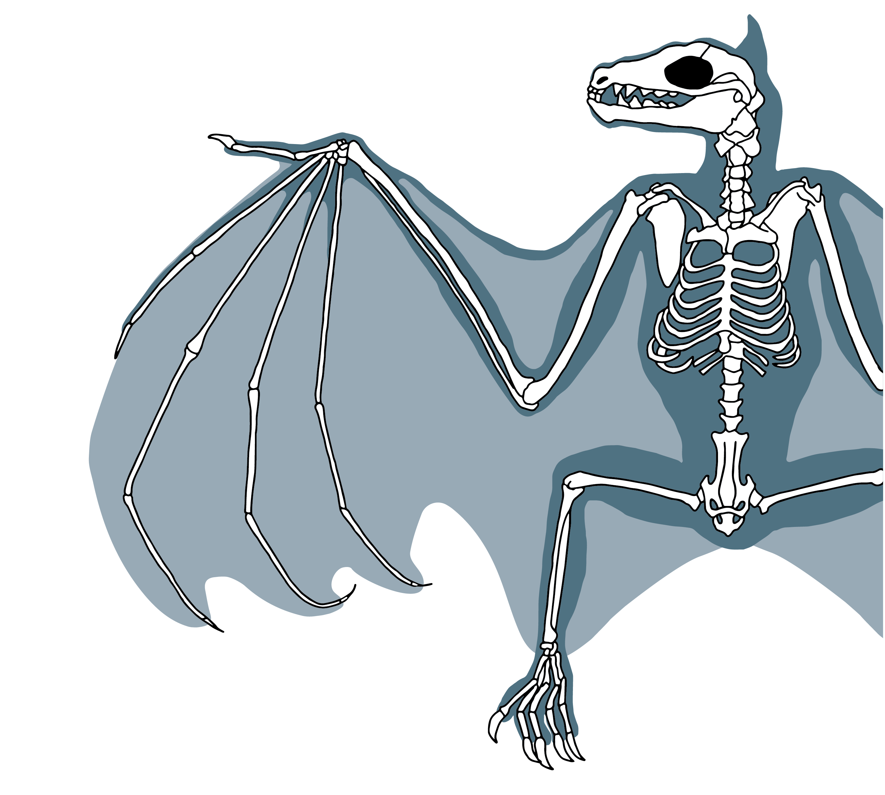

Bats fly by folding their wings while they are making a "up-stroke" This will reduce the opposition from the air (Air resistance) and make it easier to do the "down-stroke they push thier wide wings downwards with great force (called thrust) and in return they get a life from the air and rise upwards.
Bats have many features on there wings and also resemble a human hand with all the same features and bones bats hands look like a small version of a humans hand here are some pictures/examples of what a bats wing looks like and its features
.jpeg)
.jpeg)
.jpeg)
As some people may think there bones are all strong and stiff together but in reality there boths at the end of the wings are very stringy and spaghetti like to provide less drag and greater manoeuvrability. Here is two examples of what that looks like
.jpeg)
This is because there are multiple joints within the wing (more than two dozen!) and strong elongated bones along with a flexible, elastic skin membrane and a complex network of muscles and stretchy tendons, create a shape-shifting structure that provides more lift, less drag, and greater manoeuvrability
We have also got a diagram of what a bats skeleton looks like while inside the body and you cann see that stringy like bones in there wings so they can not only fly faser but move around a lot better you can also see how the human hand resemblence shows up in there all 5 fingers including the palm here is a picture of what that looks like
Bats communicate with each other by useing sounds that create distinct ambient noise in the colony-like the babble of voices at lively party. At the same time, the bats also use vocalizations to navigate their surroundings: a phenomenon known as echolocation, for which they emit ultrasonic sounds that reflect off solid surfaces.
Insectivorous bats can be maintained in captivity with the proper care. These bats also need lots of space to fly around and perch so they do not fight over where they perch and where they sleep.